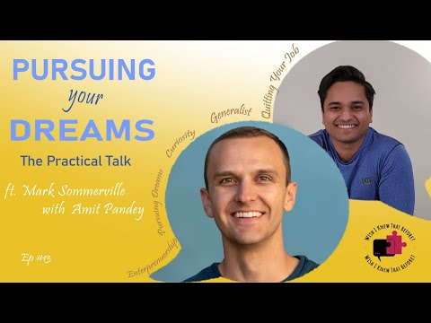
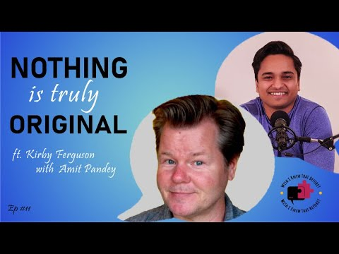
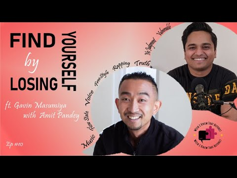

01
1:1 Communication Coaching
For the everyday moments: meetings, small talk, hard conversations, being yourself on camera. We work on confidence, clarity, and the courage to speak before you feel ready.
I'm Amit Pandey. I help founders, leaders, and quietly brilliant people turn what they know into words that move rooms — with the clarity, story, and nerve to say it out loud.
Amit Pandey — Founder, UltraCommunication
The brilliant idea that never leaves your notes. The pitch that sounds clearer in the shower. The meeting where you finally had something to say — ten minutes after it ended.
That gap is where I work. For over 20 years I've studied how an idea travels from one person to another: the story, the silence, the stakes, the ask. From biometrics research at Thales and AI initiatives with governments to the stage, the podcast, and the boardroom — the lesson is always the same. Clarity is a craft. And it can be taught.
— Amit
Every engagement is built around the moment that's actually coming — not a generic curriculum. Sessions run 15–60 minutes, online, in INR or USD.
For the everyday moments: meetings, small talk, hard conversations, being yourself on camera. We work on confidence, clarity, and the courage to speak before you feel ready.
Learn the mechanics of a story that holds a room: stakes, structure, silence, and the one line people repeat afterwards. Built for keynotes, panels, and stage presence.
A hands-on pitch lab for founders and sellers. Bring a real pitch, deliver it live, take constructive feedback, then pitch it again — sharper. Finalist at the GrowthX Hermes Hackathon.
For leaders who need to be clear under pressure — giving direction, handling Q&A, and communicating change without losing the room's trust.
Games-based speaking practice that trains you out of overthinking. Short, playful reps that make spontaneous speaking feel normal — and even fun.
Two decades in AI and deep tech, applied to how teams build, explain, and adopt intelligent products — from research lab to boardroom.
Not sure where to start? Book a general chat and we'll figure out the right room together.
Communication isn't a performance laid over who you are. It's the removal of everything that gets in the way of who you already are.
Find the one idea. Strip the jargon. Name who it helps, why it matters, and what changes if they listen. We start with meaning, not delivery.
Rep by rep, out loud. We practise the real room — the investor call, the all-hands, the difficult conversation — not a hypothetical one.
Deliver with story, silence, and a clear ask. Then we review what actually happened, so the next room starts from a higher floor.
“The goal isn't to sound impressive. It's to be impossible to misunderstand.”
— Amit PandeyAI and technology initiatives with organizations including the FBI, DHS, and the French, Spanish, and US governments — as part of prior research and consulting engagements.
Ex-Biometrics Research Scientist, Thales
University of Southern California, Class of '18
Founder & CEO, UltraCommunication
Wish I Knew That Before! — the podcast
A strong product doesn't sell itself. Founders need to explain who it helps, why it matters, and what they're asking for. Bring a real 60-second pitch, practise it live, and leave with a version that moves the conversation forward.
Candid conversations with people from different walks of life — the lessons you wish someone had told you sooner. New episodes, old truths, and the questions young adults are usually left to figure out alone.

How to Quit Your Job & Not Starve — the Generalist in a Specialized World ft. Mark Sommerville 12 Mentoring Young Kids, Pursuing Purpose & Humbling Yourself in Service ft. BC Serna 11
Everything Is a Remix: Copy, Transform, Combine & Follow Your Bliss ft. Kirby Ferguson 10
Find Yourself by Losing Yourself in Flow — Nothing Wrong With Anger ft. Gavin Masumiya 09 Ditch Others' Timeline of a Happy Life — Create Your Own ft. Terri TrespicioMost pitches fail before the delivery. They explain the product instead of the change. Use this frame to find the spine of your pitch — then bring it to a session and make it yours.
Three lines. One clear ask. Everything else is decoration.
Amit Pandey is a communication coach, storyteller, and the Founder & CEO of UltraCommunication. He has spent more than 20 years studying the thing that makes or breaks every room: how an idea travels from one person to another.
He began in deep tech — as a Biometrics Research Scientist at Thales, and on AI and technology initiatives with organizations including the FBI, DHS, and the French, Spanish, and US governments. Somewhere between research papers and boardrooms, he realised the most important translation wasn't technical. It was human.
Today he coaches founders, leaders, and professionals through 1:1 sessions, Ultraspeaking practice, and live masterclasses. He also hosts Wish I Knew That Before!, a podcast built on the conversations young adults wish they'd had sooner — with guests ranging from a polyglot language expert to a documentary filmmaker.
Based between Mumbai and Los Angeles. USC alum, Class of '18. A relentless learner, a proud generalist, and a believer that the best conversations are the ones people remember.
University of Southern California — Class of '18
Biometrics Research Scientist — Thales
Host — Wish I Knew That Before!
Founder & CEO — UltraCommunication
Still unsure? Send a message on Instagram — a real answer, not a sales funnel.
Choose a general chat or Ultraspeaking coaching, then pick 15, 30, 45, or 60 minutes. Sessions run on Google Meet. Book one session at a time, and you'll receive the meeting link and payment details after booking. Payments can be made in INR or USD.
Yes. The work is for anyone who has to speak — a job interview, a promotion pitch, a wedding toast, a team meeting, a difficult conversation. The room changes; the craft doesn't.
Yes. Workshops, masterclasses, and leadership sessions are available — including the Pitch It Right format for founder and sales teams. Reach out with the date, audience, and outcome you have in mind.
It's a games-based approach to speaking. Instead of memorising a script, you practise short, playful reps that train your brain to speak spontaneously, listen actively, and recover when you stumble. It's unusually effective for overthinkers.
Absolutely. With a background in AI research and consulting — including work with governments and Thales — Amit helps teams translate complex technology into a narrative that customers, investors, and internal stakeholders can actually follow.
Tell me what's coming up — a pitch, a promotion, a panel, or just the feeling that you're holding something back. We'll start there.